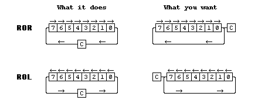

|
|
8 bit rotates. By Lee Davison. |
|
ROR and ROL both rotate a byte through the carry giving, in effect, a nine bit rotate. Sometimes an eight bit rotate is needed, as shown in the diagram below.The code. Here is a way to make those rotates effectively eight bit.
To make ROR an eight bit shift b0 must be duplicated in the carry bit, the easiest way to do this is to shift the byte but that alters it so first make a copy, rotate the byte, restore the copy and do the eight bit rotate thus ..
Not particularly elegant but does have the advantage that it takes the same number of cycles whatever the state of b0 before the rotate. If no register is available the stack can be used instead like this ..
To make ROL behave like an 8 bit shift the sense of the sign bit must be reflected in the carry bit before the shift is done. this is much easier and can be done thus ..
| Last page update: 21st January, 2005. | e-mail me
 |